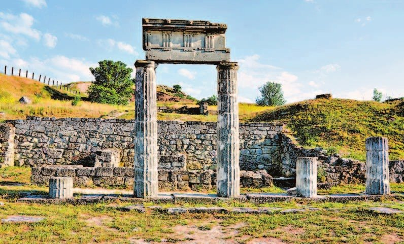
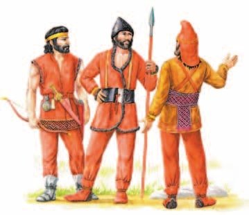
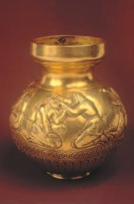
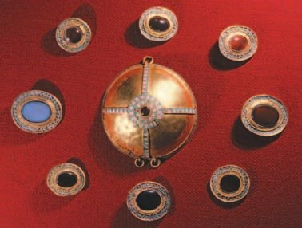
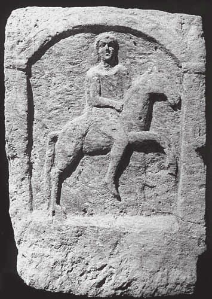
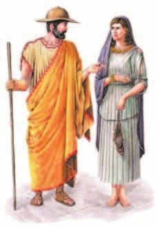

Киммерийцы
В начале 1-го тысячелетия до н. э. люди освоили железо. Это время называют . Железо открыло людям дорогу к миру, каким мы его знаем.
А в степях Евразии в это время климат стал суше и холоднее. От засухи пастбища пропадали, и племенам приходилось всё время перебираться на новые места со своими стадами. Так живут при .
Самый древний народ нашей страны, чьё имя мы знаем точно, — , кочевники Северного Причерноморья. Гомер упоминает их в «Одиссее» (§22) как далёкий сказочный народ у входа в царство мёртвых.
К началу VII века до н. э. киммерийцев сменили новые кочевники — . Они пришли с востока, из Средней Азии и Южной Сибири. По всей степи тогда жили родственные кочевые народы, похожие друг на друга. Учёные называют это «скифо-сибирским миром».
Гомер в «Илиаде» называл таких кочевников «дивные доители кобылиц млекоеды»: они доили кобылиц и пили молоко. Одной фразой — вся их жизнь: верхом и с табунами.
Скифы вытеснили киммерийцев в Малую Азию и пошли следом. Почти сто лет конные лучники грабили города Малой Азии и Ближнего Востока. А потом окончательно поселились в Северном Причерноморье.
Ты уже каталась верхом и стреляла из лука. А скифы делали это одновременно: стреляли прямо с коня. Поэтому их и называли конными лучниками.
В начале 1-го тысячелетия до н. э. произошёл новый скачок в технологическом развитии — освоение железа. Этот период в истории принято называть железным веком. Овладение новым металлом открыло человечеству путь к развитию мира в том виде, каким мы его знаем сейчас.
Одновременно с освоением человеком железа в природной среде обширных степных и полупустынных пространств Евразии происходят значительные изменения — климат становится более сухим и холодным. Засуха заставила древние племена постоянно перемещаться в поисках новых пастбищ.
Древнейшими обитателями территории нашей страны, название которых мы достоверно знаем, стали кочевники Северного Причерноморья — киммерийцы. О киммерийцах упоминает Гомер в «Одиссее» как о далёком мифическом народе, живущем у входа в подземное царство.
По данным археологии, к началу VII (7) века до н. э. киммерийцев в Северном Причерноморье сменили новые кочевые племена — скифы, пришедшие с востока, из глубин Средней Азии и Южной Сибири. К этому времени на обширных пространствах степей Евразии сформировался целый «скифо-сибирский мир», населённый различными кочевыми и полукочевыми народами, родственными по происхождению и имевшими сходный облик культуры.
Гомер в «Илиаде» называет кочевников-коневодов скифского облика «дивные доители кобылиц млекоеды», тем самым передавая характерные черты их образа жизни.
Вытеснив киммерийцев в Малую Азию, скифы последовали за ними. Почти столетие конные лучники во время набегов разоряли города Малой Азии и Ближнего Востока, после чего окончательно обосновались в Северном Причерноморье.

- Что такое кочевое хозяйство?
- Какие кочевые народы появились на территории нашей страны?
1. Как засуха в степях связана с тем, что народы в Причерноморье сменяли друг друга?
2. Про киммерийцев рассказывает и Гомер (§22), и ассирийские тексты. Чем эти рассказы различаются?
Скифы. Сарматы
К VI веку до н. э. скифы заняли степи к северу от Чёрного и Азовского морей — до самого Дуная. А на берегах уже жили греки-колонисты (§24).
Скифы с ними иногда воевали, но чаще торговали. Скифы давали скот, зерно, шкуры и рабов. Греки платили вином, вещами из золота и серебра, красивой посудой.
От этой торговли одни скифы богатели больше других. Так появилась знать, а потом и государство во главе с царём. Власть царя передавалась по наследству.
Расцвет скифского царства — IV век до н. э. Тогда появились большие укреплённые поселения: Каменское городище на Днепре, Бельское на реке Ворскле.
Как богаты были цари? Это видно по их могилам. Над могилой насыпали высотой до 20 метров — с дом в семь этажей. Внутрь клали много золота, бронзовые котлы, оружие и доспехи. С царём хоронили его слуг и коней. Самые знаменитые курганы — Куль-Оба в Крыму, Солоха и Чертомлык на Днепре.
Вещи скифы украшали зверями: хищными птицами, кошками, волками, оленями, конями, козами, кабанами, баранами и крылатыми львами-грифонами. Звери всегда в особых, строго определённых позах. Это называют . Ты любишь рисовать животных — попробуй нарисовать зверя «по-скифски».
Царь объединил всю Скифию и пошёл войной на запад. Это привело к войне с Македонией. В 339 году до н. э. скифы проиграли битву македонскому царю Филиппу II, Атей погиб. А в III веке до н. э. скифское царство пало: с востока пришли новые кочевники — .
Скифы остались только в Приднестровье и Крыму. Царь во II веке до н. э. построил там столицу — Неаполь Скифский, на месте нынешнего Симферополя. Во II веке н. э. поздних скифов победило Боспорское царство, а в середине III века н. э., после походов германских племён готов, они исчезли совсем.
Со II века до н. э. в степях Причерноморья хозяйничали сарматы — до Дуная и на Северном Кавказе. Потом они то воевали, то дружили с Римом. Одно сарматское племя — — осталось в истории надолго: на Руси их звали ясами, а от них произошли осетины. В осетинском языке до сих пор есть следы сарматских времён.
К VI (6) веку до н. э. скифы заняли пространства к северу от Чёрного и Азовского морей до Дуная на западе. В Северном Причерноморье к этому времени уже обосновались греческие колонисты. Воинственные кочевники с ними периодически воевали, но чаще торговали, поставляя скот, зерно, шкуры и рабов. Греки расплачивались вином, изделиями из золота и серебра и красивой утварью. Тесные отношения с рабовладельческими полисами греков способствовали расслоению скифского общества и ускорили процесс образования государства во главе с царём, власть которого была наследственной.
Расцвет скифского царства приходится на IV (4) век до н. э. В это время появляются крупные укреплённые поселения, такие как Каменское городище на Днепре или Бельское на днепровском притоке Ворскле.
О могуществе и богатстве скифских царей периода расцвета свидетельствуют царские захоронения. Над могилой царя насыпали курган высотой до 20 метров, а в могилу клали большое количество золотых предметов, бронзовые котлы, оружие, доспехи. В загробный мир правителя сопровождала свита — раб-конюх или слуга, наложница, а также царские лошади. Наиболее примечательны царские курганы Куль-Оба (в Крыму), Солоха и Чертомлык (на берегу Днепра).
Общая характерная особенность искусства скифов получила наименование «звериный стиль» из-за того, что особым образом и в строго определённых позах изображались различные животные — хищные птицы, кошачьи хищники, волки, олени, кони, козы, кабаны, бараны, а также фантастические животные: крылатые львы — грифоны.
Царь Атей объединил Скифию под своим началом и стал проводить активную завоевательную политику на западе, что привело к войне с Македонией. В 339 году до н. э. скифы потерпели поражение в битве с войсками македонского царя Филиппа II (2). В битве погиб и правитель скифов Атей. В III (3) веке до н. э. их государство пало под натиском новых кочевников с востока — сарматов.
Небольшие группы скифов после разгрома сохраняются лишь в Приднестровье и в Крыму, где во II (2) веке до н. э. царь Скилур основывает на месте современного Симферополя город Неаполь Скифский, столицу позднескифского царства. Во II (2) веке н. э. поздние скифы были побеждены Боспорским государством и утратили самостоятельность, а окончательно исчезли в середине III (3) века н. э., после завоевательных походов германских племён готов.
Со II (2) века до н. э. в степях Причерноморья господствовали сарматы, расселившиеся до Дуная на западе и захватившие господство на Северном Кавказе. В I (1) — II (2) веках н. э. сарматы столкнулись с новым противником — Римом, с которым то воевали, то заключали союзы. Одно из сарматских племён — аланы — надолго осталось в истории. В древнерусской «Повести временных лет» летописцы называли аланское население Северного Кавказа ясами. Аланы стали предками современных осетин, а осетинский язык до сих пор хранит некоторое наследие сарматских времён.



- Где расселялись племена скифов и сарматов?
3. Как торговля с греками помогла скифам создать государство?
4. Откуда мы знаем, что скифские цари были очень богаты? И кто сделал многие их сокровища?
5. Скифов сменили сарматы. Найди в параграфе ещё два случая, когда одни народы приходили на смену другим.
Боспорское царство
В V веке до н. э. на берегах Чёрного и Азовского морей возникло . В расцвете в него входили Восточный Крым, Таманский полуостров, низовья Кубани, восточный берег Азовского моря и устье Дона.
Столица — Пантикапей (Керчь). Большие города — Фанагория, Гермонасса, Горгиппия, Феодосия, Нимфей, Танаис. Помнишь их по §24? Жили здесь не только греки, но и местные племена, которые рядом с греками перестали кочевать и осели на месте.
Название — от : так в древности звали Керченский пролив.
Боспор богател на хлебе: выращивал его и продавал. А ещё торговал рабами, скотом, кожей, рыбой и мехами — и с соседними племенами, и с Грецией. Оттуда везли оливковое масло, вино, ткани, расписную посуду.
Со II—I веков до н. э. сюда пришло влияние Рима, а потом и сами римляне — до середины III века н. э. В IV веке н. э. царство ослабили набеги готов, а потом гуннов. А в 530-х годах его захватили восточно-римские войска, и Боспор вошёл в Византийскую империю.
Посчитай: с V века до н. э. до 530-х годов н. э. Боспорское царство прожило около тысячи лет.
В V (5) веке до н. э. в Северном Причерноморье возникло Боспорское царство, включавшее в период своего расцвета Восточный Крым, Таманский полуостров, Нижнее Прикубанье, Восточное Приазовье и устье Дона. Столицей Боспорского государства стал Пантикапей, а наиболее крупными центрами были Фанагория, Гермонасса (Таманский полуостров), Горгиппия, Феодосия, Нимфей (южные окраины современной Керчи), Танаис. В состав населения царства, кроме греков, входили ставшие оседлыми под их влиянием местные племена.
Своё название это государство получило от античного наименования Керченского пролива — Боспора Киммерийского.
В конце II (2) — первой трети I (1) века до н. э. в Северном Причерноморье наступила эпоха римского влияния, а затем и прямого римского присутствия с середины I (1) века до середины III (3) века н. э.
Натиск готов, а впоследствии и гуннов в 70-е годы IV (4) века н. э. привёл к серьёзному ослаблению Боспорского государства. Полностью свою самостоятельность оно утратило в 530-х годах после захвата восточно-римскими войсками, войдя в состав Византийской империи.

- Подумай, почему разные полисы и народы были объединены в Боспорское царство.
6. Как связаны Боспорское царство и колонии из §24?
7. Скифы и Боспор — друзья или враги? Найди ответ в разных разделах.
Подведём итоги
- Какие изменения происходили в начале 1-го тысячелетия до н. э. в жизни племён, населявших Евразию? Как они повлияли на них?
- Какие взаимоотношения были у греков-колонистов и местного населения?
- Какие современные области России заселяли народы Северного Причерноморья? Используя дополнительные источники информации, найди их на современной карте России.
Древнегреческий историк Геродот во время своего десятилетнего путешествия по разным странам посетил и Ольвию — греческую колонию в Северном Причерноморье. Находясь в Ольвии, он много общался с местными жителями, как с греками, так и скифами, записывая их рассказы. Позднее эти рассказы и личные впечатления легли в основу 4-й книги «Истории», в которой речь идёт о Скифии. Геродот. «История». Книга 4 (отрывки).
…Скифы ведь не землепашцы, а кочевники… По рассказам скифов, народ их — моложе всех. А произошёл он таким образом. Первым жителем этой ещё необитаемой тогда страны был человек по имени Таргитай. Родителями этого Таргитая, как говорят скифы, были Зевс и дочь реки Борисфена (я этому, конечно, не верю, несмотря на их утверждения).
У Таргитая было трое сыновей: Липоксаис, Арпоксаис и самый младший — Колаксаис. В их царствование на Скифскую землю с неба упали золотые предметы: плуг, ярмо, секира и чаша. Первым увидел эти вещи старший брат. Едва он подошёл, чтобы поднять их, как золото запылало. Тогда он отступил, и приблизился второй брат, и опять золото было объято пламенем. Так жар пылающего золота отогнал обоих братьев, но, когда подошёл третий, младший, брат, пламя погасло, и он отнёс золото к себе в дом. Поэтому старшие братья согласились отдать царство младшему.
Так вот, от Липоксаиса, как говорят, произошло скифское племя, называемое авхатами, от среднего брата — племя катиаров и траспиев, а от младшего из братьев — царя — племя паралатов. Все племена вместе называются сколотами, т. е. царскими. Эллины же зовут их скифами. Так рассказывают скифы о происхождении своего народа…
Сформулируй ответ на главный вопрос параграфа — какие народы проживали в Северном Причерноморье и какое влияние они оказали на развитие этой территории? Приведи два-три довода.
Проверь себя
Нажимай по очереди — от самого древнего к самому близкому к нам.
1. Какой самый древний народ нашей страны, чьё имя мы знаем точно?
2. Откуда пришли скифы?
3. Что насыпали над могилой скифского царя?
4. Как называют стиль скифского искусства?
5. Предками какого народа стали аланы?
6. Какой город был столицей Боспорского царства?
Расскажи вслух
Киммерийцы и скифы
- Железный век; засуха гонит кочевников искать пастбища.
- Киммерийцы — первый народ нашей страны, чьё имя известно; их упоминает Гомер.
- К началу VII века до н. э. их сменили скифы с востока — конные лучники.
Скифские цари и их курганы
- Торговля с греками: скот, зерно, шкуры, рабы — за вино, золото, серебро, посуду; появилось царство.
- Курганы до 20 метров: золото, котлы, оружие, слуги и кони; Куль-Оба, Солоха, Чертомлык.
- Звериный стиль: звери в особых позах.
Конец Скифии, сарматы и аланы
- Атей погиб в 339 году до н. э. в битве с Филиппом II; в III веке до н. э. царство пало под натиском сарматов.
- Поздние скифы: Скилур и Неаполь Скифский (Симферополь); исчезли в III веке н. э.
- Сарматы господствуют со II века до н. э.; аланы — ясы на Руси, предки осетин.
Боспорское царство
- Возникло в V веке до н. э.; столица Пантикапей; Фанагория, Горгиппия, Феодосия, Танаис и др.
- Греки и осевшие местные племена; богатство — хлеб и торговля.
- Рим, готы и гунны; в 530-х годах — в составе Византии; около тысячи лет.
Главный вопрос: народы Причерноморья и их влияние
- Киммерийцы, скифы, сарматы и аланы, гунны — кочевники сменяли друг друга; у скифов сложилось царство.
- Греки основали колонии, торговали с кочевниками; местные племена оседали рядом с ними.
- Так появилось Боспорское царство и древнейшие города России; аланы стали предками осетин.